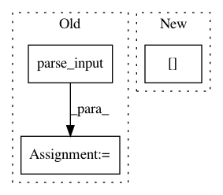

9e552fe00fa90b2c16bf351be5ee108cf37415fa,demo-web/sample_server.py,NMTSampler,generate_sample,#NMTSampler#Any#Any#Any#Any#Any#Any#Any#,187
Before Change
tokenization_end_time = time.time()
logger.log(2, "tokenization time: %.6f" % (tokenization_end_time - tokenization_start_time))
parse_input_start_time = time.time()
src_seq, src_words = parse_input(tokenized_input, self.dataset, self.word2index_x)
parse_input_end_time = time.time()
logger.log(2, "parse_input time: %.6f" % (parse_input_end_time - parse_input_start_time))
fixed_words_user = OrderedDict()
After Change
max_len=self.params["MAX_INPUT_TEXT_LEN"],
offset=0,
fill=self.dataset.fill_text[self.params["INPUTS_IDS_DATASET"][0]],
pad_on_batch=self.dataset.pad_on_batch[self.params["INPUTS_IDS_DATASET"][0]],
words_so_far=False,
loading_X=True)[0][0]
In pattern: SUPERPATTERN
Frequency: 3
Non-data size: 3
Instances
Project Name: lvapeab/nmt-keras
Commit Name: 9e552fe00fa90b2c16bf351be5ee108cf37415fa
Time: 2018-11-19
Author: lvapeab@gmail.com
File Name: demo-web/sample_server.py
Class Name: NMTSampler
Method Name: generate_sample
Project Name: ysig/GraKeL
Commit Name: 0e84313d49f4b3f5aef0e0d558ecc34e271b2ad5
Time: 2018-01-24
Author: y.siglidis@gmail.com
File Name: grakel/graph_kernels.py
Class Name: GraphKernel
Method Name: fit
Project Name: lvapeab/nmt-keras
Commit Name: 9e552fe00fa90b2c16bf351be5ee108cf37415fa
Time: 2018-11-19
Author: lvapeab@gmail.com
File Name: demo-web/sample_server.py
Class Name: NMTSampler
Method Name: learn_from_sample